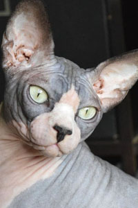
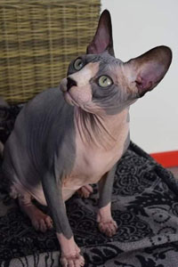
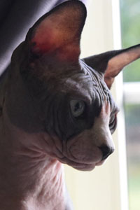
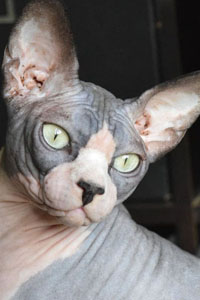
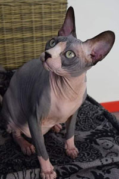
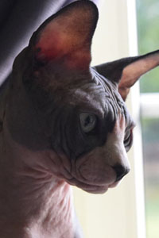

Mâles
Nero Von Sanura dei Neferthem


- Couleur de robes
- Couleur des yeux:
- Titre :
- Cream mink
- Aiguë marine
- Champion du monde et 3 X Citations classe Honneur
Nero est notre premier sphynx, arrivé à la maison un peu par caprice; en effet ma fille allergique aux poils d'animaux voulait tout de même avoir « son chat ».
Nous avons donc fait plusieurs expos félines et sur le conseil d'une amie ayant beaucoup d'expérience dans le domaine de la felinophilie nous avons adopté Nero qui s'est avéré être une véritable graine de champion selon la juge et a décroché un Supreme of supreme (récompense ultime de l'expo)déjà à l'age de 5 mois.
Zeus Grand Faraon
 





- Couleur de la robe :
- Couleur des yeux :
- Black & white bicolor
- Vert
Elevage Abraamyan N.
Zeus (Monsieur pour les intimes) nous a fait voyager; il est parfois compliqué de trouver le gabarit ou le type d'étalon que l’on aimerait pour développer sa chatterie et nous nous sommes donc rendu à Moscou pour trouver notre bonheur. Après de longs échanges avec l'éleveuse et une fine analyse des pedigrées des parents nous l'avons réservé et 4 mois plus tard et un long voyage il rejoignait la chatterie. Son premier fils fut appelé Moscou.
Femelles
Acapella BadarHan


- Couleur de la robe :
- Couleur des yeux :
- Seal
- Vert
Douchka (Athena)
- Couleur de la robe :
- Couleur des yeux :
- Black
- Vert
Katrina Joser

- couleur de la robe :
- couleur des yeux :
- Seal mink
- bleu